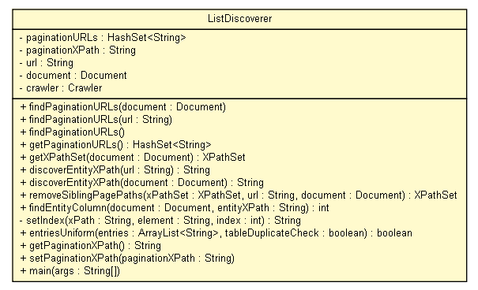

tud.iir.extraction.entity
Class ListDiscoverer

java.lang.Object
 tud.iir.extraction.entity.ListDiscoverer
tud.iir.extraction.entity.ListDiscoverer
public class ListDiscoverer
- extends java.lang.Object
The ListDiscoverer tries to find a list (with entities) on a web page.
If a "good" list is found the xPath for one or all entries in the list is returned.
Features of a "good" list are as follows.
- the list has at least 10 entries
- it is the only long list on the web page, not just one of many (path lengths distribution)
- it has uniform entries, that is, entries are in almost the same format
- the list is specific for the web page, it should not be a navigation list that can be found on another page of the website
If no good list is found, an empty string is returned.
| Methods inherited from class java.lang.Object |
clone, equals, finalize, getClass, hashCode, notify, notifyAll, toString, wait, wait, wait |
paginationURLs
private java.util.HashSet<java.lang.String> paginationURLs
paginationXPath
private java.lang.String paginationXPath
url
private java.lang.String url
document
private org.w3c.dom.Document document
crawler
private Crawler crawler
ListDiscoverer
public ListDiscoverer()
findPaginationURLs
public void findPaginationURLs(org.w3c.dom.Document document)
findPaginationURLs
public void findPaginationURLs(java.lang.String url)
findPaginationURLs
public void findPaginationURLs()
getPaginationURLs
public java.util.HashSet<java.lang.String> getPaginationURLs()
getXPathSet
public XPathSet getXPathSet(org.w3c.dom.Document document)
- Get a set of xPaths.
- Parameters:
document - The document the xPaths are constructed for.
- Returns:
- A set of xPaths.
discoverEntityXPath
public java.lang.String discoverEntityXPath(java.lang.String url)
discoverEntityXPath
public java.lang.String discoverEntityXPath(org.w3c.dom.Document document)
removeSiblingPagePaths
public XPathSet removeSiblingPagePaths(XPathSet xPathSet,
java.lang.String url,
org.w3c.dom.Document document)
findEntityColumn
public int findEntityColumn(org.w3c.dom.Document document,
java.lang.String entityXPath)
setIndex
private java.lang.String setIndex(java.lang.String xPath,
java.lang.String element,
int index)
entriesUniform
public static boolean entriesUniform(java.util.ArrayList<java.lang.String> entries,
boolean tableDuplicateCheck)
- Check whether a list of entries is likely to be a list of entities.
The list is rejected if:
- more than 10% of them are just numbers
- more than 50% are only capitalized, e.g. CATEGORIES
TODO does it make a difference?
- the average string length is more than 12 words
- there are not more than 10% entries that have duplicates
- there are not more than 10% entries missing
- Parameters:
entries -
- Returns:
- True if the list entries are uniform, else false.
getPaginationXPath
public java.lang.String getPaginationXPath()
setPaginationXPath
public void setPaginationXPath(java.lang.String paginationXPath)
main
public static void main(java.lang.String[] args)
- Parameters:
args -